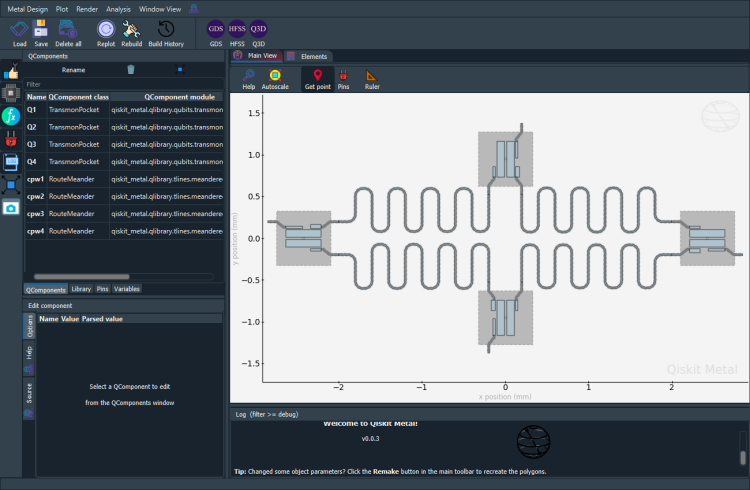

Note
This page was generated from circuit-examples/full-design-flow-examples/Example-used-in-the-launch-video.ipynb.
Launch Videos¶
Ther two designs below were used in the October video used to launch qiskit-metal on twitter.
First launch video¶
Preparations¶


💡 Running in Colab or Binder? Skip the desktop GUI install — the cell below grabs the lite (no-Qt) wheel, and
qm.gui(design)auto-picks an inline matplotlib viewer with the same API (gui.rebuild(),gui.screenshot(),gui.edit_component(...)) as the desktopMetalGUI.
[ ]:
# In Colab / Binder, uncomment to install Quantum Metal (lite, no Qt).
# Locally you should already have it via `pip install quantum-metal` or
# `pip install 'quantum-metal[gui]'` for the desktop GUI.
# !pip install -q quantum-metal
[1]:
%load_ext autoreload
%autoreload 2
import qiskit_metal as metal
from qiskit_metal import designs, draw
from qiskit_metal import MetalGUI, Dict, Headings
[2]:
design = designs.DesignPlanar()
gui = MetalGUI(design)
from qiskit_metal.qlibrary.qubits.transmon_pocket import TransmonPocket
TransmonPocket.get_template_options(design)
[2]:
{'pos_x': '0um',
'pos_y': '0um',
'connection_pads': {},
'_default_connection_pads': {'pad_gap': '15um',
'pad_width': '125um',
'pad_height': '30um',
'pad_cpw_shift': '5um',
'pad_cpw_extent': '25um',
'cpw_width': 'cpw_width',
'cpw_gap': 'cpw_gap',
'cpw_extend': '100um',
'pocket_extent': '5um',
'pocket_rise': '65um',
'loc_W': '+1',
'loc_H': '+1'},
'chip': 'main',
'pad_gap': '30um',
'inductor_width': '20um',
'pad_width': '455um',
'pad_height': '90um',
'pocket_width': '650um',
'pocket_height': '650um',
'orientation': '0',
'hfss_wire_bonds': False,
'q3d_wire_bonds': False,
'hfss_inductance': '10nH',
'hfss_capacitance': 0,
'hfss_resistance': 0,
'hfss_mesh_kw_jj': 7e-06,
'q3d_inductance': '10nH',
'q3d_capacitance': 0,
'q3d_resistance': 0,
'q3d_mesh_kw_jj': 7e-06,
'gds_cell_name': 'my_other_junction'}
Set the default settings for trace width and trace gap.
[3]:
design.variables["cpw_width"] = "15 um"
design.variables["cpw_gap"] = "9 um"
Create the design¶
4 transmons (3 pins each) + 4 CPWs
[4]:
# Allow running the same cell here multiple times to overwrite changes
design.overwrite_enabled = True
## Custom options for all the transmons
options = dict(
# Some options we want to modify from the defaults
# (see below for defaults)
pad_width="425 um",
pocket_height="650um",
# Adding 4 connectors (see below for defaults)
connection_pads=dict(
a=dict(loc_W=+1, loc_H=-1, pad_width="200um"),
b=dict(loc_W=-1, loc_H=+1, pad_height="30um"),
c=dict(loc_W=-1, loc_H=-1, pad_height="50um"),
),
)
## Create 4 transmons
q1 = TransmonPocket(
design, "Q1", options=dict(pos_x="+2.42251mm", pos_y="+0.0mm", **options)
)
q2 = TransmonPocket(
design,
"Q2",
options=dict(pos_x="+0.0mm", pos_y="-0.95mm", orientation="270", **options),
)
q3 = TransmonPocket(
design,
"Q3",
options=dict(pos_x="-2.42251mm", pos_y="+0.0mm", orientation="180", **options),
)
q4 = TransmonPocket(
design,
"Q4",
options=dict(pos_x="+0.0mm", pos_y="+0.95mm", orientation="90", **options),
)
from qiskit_metal.qlibrary.tlines.meandered import RouteMeander
RouteMeander.get_template_options(design)
options = Dict(
lead=Dict(start_straight="0.2mm", end_straight="0.2mm"),
trace_gap="9um",
trace_width="15um",
)
def connect(
component_name: str,
component1: str,
pin1: str,
component2: str,
pin2: str,
length: str,
asymmetry="0 um",
flip=False,
fillet="90um",
):
"""Connect two pins with a CPW."""
myoptions = Dict(
fillet=fillet,
pin_inputs=Dict(
start_pin=Dict(component=component1, pin=pin1),
end_pin=Dict(component=component2, pin=pin2),
),
total_length=length,
)
myoptions.update(options)
myoptions.meander.asymmetry = asymmetry
myoptions.meander.lead_direction_inverted = "true" if flip else "false"
return RouteMeander(design, component_name, myoptions)
asym = 140
cpw1 = connect("cpw1", "Q1", "c", "Q2", "b", "5.6 mm", f"+{asym}um")
cpw2 = connect("cpw2", "Q3", "b", "Q2", "c", "5.7 mm", f"-{asym}um", flip=True)
cpw3 = connect("cpw3", "Q3", "c", "Q4", "b", "5.6 mm", f"+{asym}um")
cpw4 = connect("cpw4", "Q1", "b", "Q4", "c", "5.7 mm", f"-{asym}um", flip=True)
gui.rebuild()
gui.autoscale()
4 Open to Ground Pins
[5]:
from qiskit_metal.qlibrary.terminations.open_to_ground import OpenToGround
otg1 = OpenToGround(
design,
"OTG1",
options=dict(pos_x="2771um", pos_y="0", orientation="180", gap="9um", width="15um"),
)
otg2 = OpenToGround(
design,
"OTG2",
options=dict(
pos_x="0um", pos_y="-1301um", orientation="90", gap="9um", width="15um"
),
)
otg3 = OpenToGround(
design,
"OTG3",
options=dict(pos_x="-2771um", pos_y="0", orientation="0", gap="9um", width="15um"),
)
otg4 = OpenToGround(
design,
"OTG4",
options=dict(
pos_x="0um", pos_y="1301um", orientation="270", gap="9um", width="15um"
),
)
V1 Launchers
[6]:
from qiskit_metal.qlibrary.terminations.launchpad_wb import LaunchpadWirebond
p1_c = LaunchpadWirebond(
design,
"P1_C",
options=dict(
pos_x="4000um",
pos_y="2812um",
orientation="270",
lead_length="0um",
cpw_gap="9um",
cpw_width="15um",
),
)
p2_c = LaunchpadWirebond(
design,
"P2_C",
options=dict(
pos_x="4000um",
pos_y="-2812um",
orientation="90",
lead_length="0um",
cpw_gap="9um",
cpw_width="15um",
),
)
p3_c = LaunchpadWirebond(
design,
"P3_C",
options=dict(
pos_x="-4000um",
pos_y="-2812um",
orientation="90",
lead_length="0um",
cpw_gap="9um",
cpw_width="15um",
),
)
p4_c = LaunchpadWirebond(
design,
"P4_C",
options=dict(
pos_x="-4000um",
pos_y="2812um",
orientation="270",
lead_length="0um",
cpw_gap="9um",
cpw_width="15um",
),
)
V2 Launchers
[7]:
from qiskit_metal.qlibrary.terminations.launchpad_wb_coupled import (
LaunchpadWirebondCoupled,
)
p1_q = LaunchpadWirebondCoupled(
design,
"P1_Q",
options=dict(
pos_x="4020um",
pos_y="0",
orientation="180",
lead_length="0um",
cpw_gap="9um",
cpw_width="15um",
),
)
p2_q = LaunchpadWirebondCoupled(
design,
"P2_Q",
options=dict(
pos_x="-990um",
pos_y="-2812um",
orientation="90",
lead_length="0um",
cpw_gap="9um",
cpw_width="15um",
),
)
p3_q = LaunchpadWirebondCoupled(
design,
"P3_Q",
options=dict(
pos_x="-4020um",
pos_y="0",
orientation="0",
lead_length="0um",
cpw_gap="9um",
cpw_width="15um",
),
)
p4_q = LaunchpadWirebondCoupled(
design,
"P4_Q",
options=dict(
pos_x="990um",
pos_y="2812um",
orientation="270",
lead_length="0um",
cpw_gap="9um",
cpw_width="15um",
),
)
gui.rebuild()
gui.autoscale()
Charge Lines to Corners
[8]:
import numpy as np
from collections import OrderedDict
from qiskit_metal.qlibrary.tlines.anchored_path import RouteAnchors
anchors1c = OrderedDict()
anchors1c[0] = np.array([3, 0])
anchors1c[1] = np.array([3, 2.5])
anchors1c[2] = np.array([4, 2.5])
options_line_cl1 = {
"pin_inputs": {
"start_pin": {"component": "OTG1", "pin": "open"},
"end_pin": {"component": "P1_C", "pin": "tie"},
},
"leadin": {"start": "0um", "end": "0um"},
"anchors": anchors1c,
"trace_gap": "9um",
"trace_width": "15um",
"fillet": "90um",
}
cl1 = RouteAnchors(design, "line_cl1", options_line_cl1)
anchors2c = OrderedDict()
anchors2c[0] = np.array([0, -1.5])
anchors2c[1] = np.array([2, -1.5])
anchors2c[2] = np.array([2, -2.5])
anchors2c[3] = np.array([4, -2.5])
options_line_cl2 = {
"pin_inputs": {
"start_pin": {"component": "OTG2", "pin": "open"},
"end_pin": {"component": "P2_C", "pin": "tie"},
},
"leadin": {"start": "0um", "end": "0um"},
"anchors": anchors2c,
"fillet": "90um",
"trace_gap": "9um",
"trace_width": "15um",
}
cl2 = RouteAnchors(design, "line_cl2", options_line_cl2)
anchors3c = OrderedDict()
anchors3c[0] = np.array([-3, 0])
anchors3c[1] = np.array([-3, -2.5])
anchors3c[2] = np.array([-4, -2.5])
options_line_cl3 = {
"pin_inputs": {
"start_pin": {"component": "OTG3", "pin": "open"},
"end_pin": {"component": "P3_C", "pin": "tie"},
},
"leadin": {"start": "0um", "end": "0um"},
"anchors": anchors3c,
"fillet": "90um",
"trace_gap": "9um",
"trace_width": "15um",
}
cl3 = RouteAnchors(design, "line_cl3", options_line_cl3)
anchors4c = OrderedDict()
anchors4c[0] = np.array([0, 1.5])
anchors4c[1] = np.array([-2, 1.5])
anchors4c[2] = np.array([-2, 2.5])
anchors4c[3] = np.array([-4, 2.5])
options_line_cl4 = {
"pin_inputs": {
"start_pin": {"component": "OTG4", "pin": "open"},
"end_pin": {"component": "P4_C", "pin": "tie"},
},
"leadin": {"start": "0um", "end": "0um"},
"anchors": anchors4c,
"fillet": "90um",
"trace_gap": "9um",
"trace_width": "15um",
}
cl4 = RouteAnchors(design, "line_cl4", options_line_cl4)
gui.rebuild()
gui.autoscale()
Exchange Coupler Lines
[9]:
options = Dict(
lead=Dict(start_straight="0.35mm", end_straight="0.15mm"),
trace_gap="9um",
trace_width="15um",
)
ol1 = connect("ol1", "Q1", "a", "P1_Q", "tie", "5.5 mm", f"+{asym}um", flip=True)
ol2 = connect("ol2", "Q2", "a", "P2_Q", "tie", "13.0 mm", f"+{asym}um", flip=True)
ol3 = connect("ol3", "Q3", "a", "P3_Q", "tie", "5.5 mm", f"+{asym}um", flip=True)
ol4 = connect("ol4", "Q4", "a", "P4_Q", "tie", "13.0 mm", f"+{asym}um", flip=True)
gui.rebuild()
gui.autoscale()
Export¶
We now demonstrate the export to GDS. QDesign enables GDS renderer during init.
[10]:
a_gds = design.renderers.gds
a_gds.options
[10]:
{'short_segments_to_not_fillet': 'True',
'check_short_segments_by_scaling_fillet': '2.0',
'gds_unit': 0.001,
'ground_plane': 'True',
'negative_mask': {'main': []},
'corners': 'circular bend',
'tolerance': '0.00001',
'precision': '0.000000001',
'width_LineString': '10um',
'path_filename': '../resources/Fake_Junctions.GDS',
'junction_pad_overlap': '5um',
'max_points': '199',
'cheese': {'datatype': '100',
'shape': '0',
'cheese_0_x': '25um',
'cheese_0_y': '25um',
'cheese_1_radius': '100um',
'view_in_file': {'main': {1: True}},
'delta_x': '100um',
'delta_y': '100um',
'edge_nocheese': '200um'},
'no_cheese': {'datatype': '99',
'buffer': '25um',
'cap_style': '2',
'join_style': '2',
'view_in_file': {'main': {1: True}}},
'bounding_box_scale_x': '1.2',
'bounding_box_scale_y': '1.2'}
If you have a fillet_value, this will not be applied to the LineSegments that are shorter than 2*fillet_value.
[11]:
a_gds.options["short_segments_to_not_fillet"] = "True"
a_gds.options["check_short_segments_by_scaling_fillet"] = 2.0
a_gds.options["path_filename"] = "../resources/Fake_Junctions.GDS"
Export GDS file for all components in design. Please include the path to the location where you want to eport the GDS file. No path, will export to the folder where this notebook resides.
export_to_gds(self, file_name: str, highlight_qcomponents: list = []) -> int
[12]:
a_gds.export_to_gds("Launch_Notebook.gds")
02:54PM 53s WARNING [_cheese_buffer_maker]: The bounding box for no-cheese is outside of chip size.
Bounding box for chip is (-4.5, -3.0, 4.5, 3.0).
Bounding box with no_cheese buffer is (-4.295000000000001, -3.087, 4.295000000000001, 3.087).
[12]:
1
[13]:
gui.main_window.close()
[13]:
True
END of first video¶
Second launch video¶
Requires both Ansys and the design from the previous setup
Preparations¶
[14]:
%load_ext autoreload
%autoreload 2
import qiskit_metal as metal
from qiskit_metal import designs, draw
from qiskit_metal import MetalGUI, Dict, Headings
The autoreload extension is already loaded. To reload it, use:
%reload_ext autoreload
[15]:
from qiskit_metal.renderers.renderer_ansys.ansys_renderer import QAnsysRenderer
QAnsysRenderer.default_options
[15]:
{'Lj': '10nH',
'Cj': 0,
'_Rj': 0,
'max_mesh_length_jj': '7um',
'project_path': None,
'project_name': None,
'design_name': None,
'x_buffer_width_mm': 0.2,
'y_buffer_width_mm': 0.2,
'wb_threshold': '400um',
'wb_offset': '0um',
'wb_size': 5,
'plot_ansys_fields_options': {'name': 'NAME:Mag_E1',
'UserSpecifyName': '0',
'UserSpecifyFolder': '0',
'QuantityName': 'Mag_E',
'PlotFolder': 'E Field',
'StreamlinePlot': 'False',
'AdjacentSidePlot': 'False',
'FullModelPlot': 'False',
'IntrinsicVar': "Phase='0deg'",
'PlotGeomInfo_0': '1',
'PlotGeomInfo_1': 'Surface',
'PlotGeomInfo_2': 'FacesList',
'PlotGeomInfo_3': '1'}}
[16]:
design = designs.DesignPlanar()
gui = MetalGUI(design)
from qiskit_metal.qlibrary.qubits.transmon_pocket import TransmonPocket
[17]:
design.variables["cpw_width"] = "15 um"
design.variables["cpw_gap"] = "9 um"
Create the design¶
[18]:
# Allow running the same cell here multiple times to overwrite changes
design.overwrite_enabled = True
## Custom options for all the transmons
options = dict(
# Some options we want to modify from the defaults
# (see below for defaults)
pad_width="425 um",
pocket_height="650um",
# Adding 4 connectors (see below for defaults)
connection_pads=dict(
a=dict(loc_W=+1, loc_H=-1, pad_width="200um"),
b=dict(loc_W=-1, loc_H=+1, pad_height="30um"),
c=dict(loc_W=-1, loc_H=-1, pad_height="50um"),
),
)
## Create 4 transmons
q1 = TransmonPocket(
design, "Q1", options=dict(pos_x="+2.42251mm", pos_y="+0.0mm", **options)
)
q2 = TransmonPocket(
design,
"Q2",
options=dict(pos_x="+0.0mm", pos_y="-0.95mm", orientation="270", **options),
)
q3 = TransmonPocket(
design,
"Q3",
options=dict(pos_x="-2.42251mm", pos_y="+0.0mm", orientation="180", **options),
)
q4 = TransmonPocket(
design,
"Q4",
options=dict(pos_x="+0.0mm", pos_y="+0.95mm", orientation="90", **options),
)
from qiskit_metal.qlibrary.tlines.meandered import RouteMeander
RouteMeander.get_template_options(design)
options = Dict(
lead=Dict(start_straight="0.2mm", end_straight="0.2mm"),
trace_gap="9um",
trace_width="15um",
)
def connect(
component_name: str,
component1: str,
pin1: str,
component2: str,
pin2: str,
length: str,
asymmetry="0 um",
flip=False,
fillet="90um",
):
"""Connect two pins with a CPW."""
myoptions = Dict(
fillet=fillet,
pin_inputs=Dict(
start_pin=Dict(component=component1, pin=pin1),
end_pin=Dict(component=component2, pin=pin2),
),
total_length=length,
)
myoptions.update(options)
myoptions.meander.asymmetry = asymmetry
myoptions.meander.lead_direction_inverted = "true" if flip else "false"
return RouteMeander(design, component_name, myoptions)
asym = 140
cpw1 = connect("cpw1", "Q1", "c", "Q2", "b", "5.6 mm", f"+{asym}um")
cpw2 = connect("cpw2", "Q3", "b", "Q2", "c", "5.7 mm", f"-{asym}um", flip=True)
cpw3 = connect("cpw3", "Q3", "c", "Q4", "b", "5.6 mm", f"+{asym}um")
cpw4 = connect("cpw4", "Q1", "b", "Q4", "c", "5.7 mm", f"-{asym}um", flip=True)
gui.rebuild()
gui.autoscale()
[19]:
gui.screenshot()

Render the design¶
This section directly interacts with the renderer, thus will not allow analysis. For analyzing the design, please refer to the method described in the tutorial notebook 4.2.
[20]:
fourq = design.renderers.hfss
Before proceding, open Ansys Electronic Desktop manually and wait for it to completely open. Also create a project if it does not get created automatically.
The following cell will error out if Ansys is not configured correctly.
[21]:
fourq.connect_ansys()
INFO 02:54PM [connect_project]: Connecting to Ansys Desktop API...
INFO 02:54PM [load_ansys_project]: Opened Ansys App
INFO 02:54PM [load_ansys_project]: Opened Ansys Desktop v2020.2.0
INFO 02:54PM [load_ansys_project]: Opened Ansys Project
Folder: C:/Ansoft/
Project: Project16
INFO 02:54PM [connect_design]: No active design found (or error getting active design).
INFO 02:54PM [connect]: Connected to project "Project16". No design detected
[22]:
fourq.add_eigenmode_design("FourQ")
02:54PM 59s WARNING [add_eigenmode_design]: This method is deprecated. Change your scripts to use new_ansys_design()
INFO 02:55PM [connect_design]: Opened active design
Design: FourQ [Solution type: Eigenmode]
WARNING 02:55PM [connect_setup]: No design setup detected.
WARNING 02:55PM [connect_setup]: Creating eigenmode default setup.
INFO 02:55PM [get_setup]: Opened setup `Setup` (<class 'pyEPR.ansys.HfssEMSetup'>)
Render everything from the design onto Ansys.
[ ]:
fourq.render_design([], [])
[ ]:
fourq.disconnect_ansys()
For more information, review the Introduction to Quantum Computing and Quantum Hardware lectures below
|
Lecture Video | Lecture Notes | Lab |
|
Lecture Video | Lecture Notes | Lab |
|
Lecture Video | Lecture Notes | Lab |
|
Lecture Video | Lecture Notes | Lab |
|
Lecture Video | Lecture Notes | Lab |
|
Lecture Video | Lecture Notes | Lab |